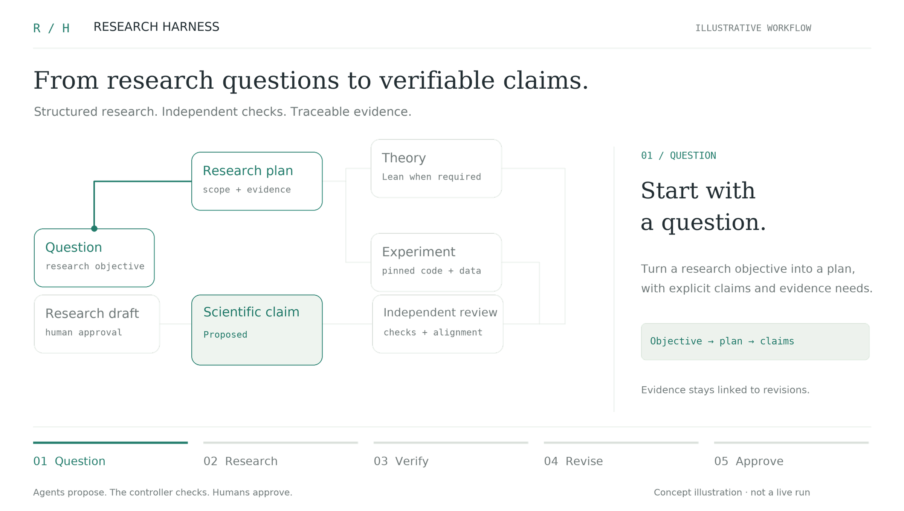

<!doctype html>
<html lang="en">
<meta charset="utf-8">
<meta name="viewport" content="width=device-width,initial-scale=1">
<title>Research Harness — Workflow preview</title>
<style>
  * { box-sizing: border-box; }
  body { margin: 0; background: #eeede8; color: #222d32; font: 15px system-ui,sans-serif; }
  main { max-width: 1280px; margin: 7vh auto; padding: 24px; }
  figure { margin: 0; border: 1px solid #d7ddd8; border-radius: 12px; overflow: hidden; background: transparent; }
  img { display: block; width: 100%; height: auto; }
  [hidden] { display: none !important; }
  footer { display: flex; flex-wrap: wrap; align-items: center; gap: 12px; padding: 18px 0; }
  button, a { color: #247b6b; font: inherit; }
  button { cursor: pointer; border: 1px solid #cbd6ce; background: #f7f6f2; border-radius: 6px; padding: 8px 16px; }
  button:focus-visible, a:focus-visible { outline: 2px solid #247b6b; outline-offset: 4px; }
  p { color: #6e7777; margin-left: auto; }
</style>
<main>
  <figure aria-label="Illustrative five-stage research workflow, including failed review, revision, and final human approval">
    
  </figure>
  <footer>
    <button id="toggle" type="button">Show still</button>
    <button id="replay" type="button">Replay</button>
    <a href="research-workflow.png" download>Download APNG</a>
    <p>30 fps · 2400 × 1360 · transparent · illustrative workflow</p>
  </footer>
</main>
<script>
  const animation = document.getElementById('animation');
  const toggle = document.getElementById('toggle');
  let playing = true;
  function showStill() {
    animation.src = 'research-workflow-still.png';
    playing = false; toggle.textContent = 'Play animation';
  }
  function play() {
    animation.src = 'research-workflow.png?replay=' + Date.now();
    playing = true; toggle.textContent = 'Show still';
  }
  toggle.onclick = () => {
    if (playing) showStill(); else play();
  };
  document.getElementById('replay').onclick = play;
  if (matchMedia('(prefers-reduced-motion: reduce)').matches) {
    showStill();
  }
</script>
</html>
